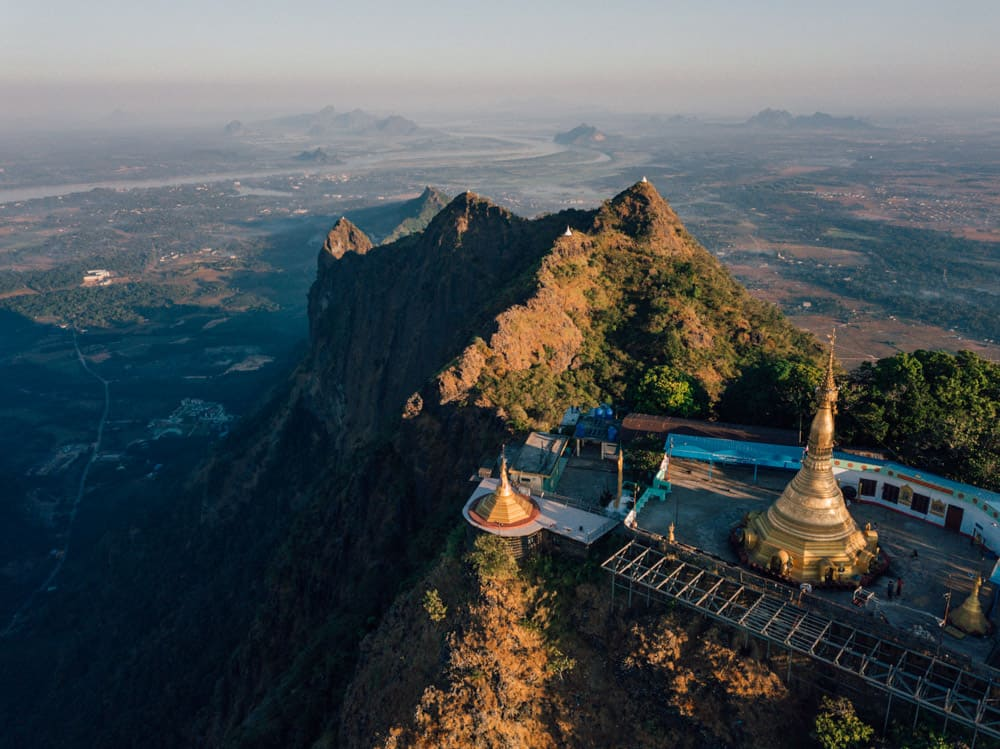

Kayin State provides the variety of a mountainous terrain amidst the beaches and seas of Southern Myanmar. The state is encircled by karst limestone peaks that soar above the lush green paddy fields. Interspersed with incredible caves, Kayin offers a stunning view of the western mountainous area of Myanmar. Hpa-An is the capital city of Kayin state. The city itself is beautiful, surrounded with limestone peaks on all sides. A typical Kayin landscape is characterized by lush green farms which make way to lush green mountains.
|  | Mount Zwegabin Mt. Zwegabin at 722 metres height is one of the most sacred mountains in Myanmar. Although the 2-hour climb to the top is steep, the effort is rewarded by the fabulous views from Kayin‘s most famous landmark. Visitors who wish to enjoy the sunset can spend the night in the monastery atop the mountain. Thousands of large statues of Buddha can be seen at the foot of the mountain. |
|---|
Kyone Htaw waterfall The naturally green coloured water of Kyone Htaw waterfall is another attraction of Kayin which cannot be missed. The waterfall is located next to Htiklawtho, near the town of Hlaing Bwe. The waterfall is encircled by a pristine forest ideal to enjoy nature in its true form. The best time to visit this waterfall is during the dry season. |
|---|
Kyauk Kaalap Kyauk Kaalap, a pagoda perched on the summit of a sheer rock is one of the most stunning sights of Kayin. The pagoda overlooks an artificial lake and is topped with a golden stupa. Tourists can spend time marvelling at the unspoiled natural surrounding of the pagoda. Sometimes, the still water of the lake reflects back a mirror image of the pagoda, a view which can hardly be forgotten. |
|---|
Sadan Cave Sadan cave is located at the southernmost part of Zwekabin mountain range, on the eastern bank of Thanlwin river, around 32 km from Hpa An. It has a two-sided mouth in a rectangular shape with is 107 metres long and 10 metres high. It is a walkthrough cave hosting dozens of Buddha statues, a couple of pagodas and some newer day wall carvings. |
|---|
Copyright @AnyGo Travel and Tours
2020 All Rights Reserved